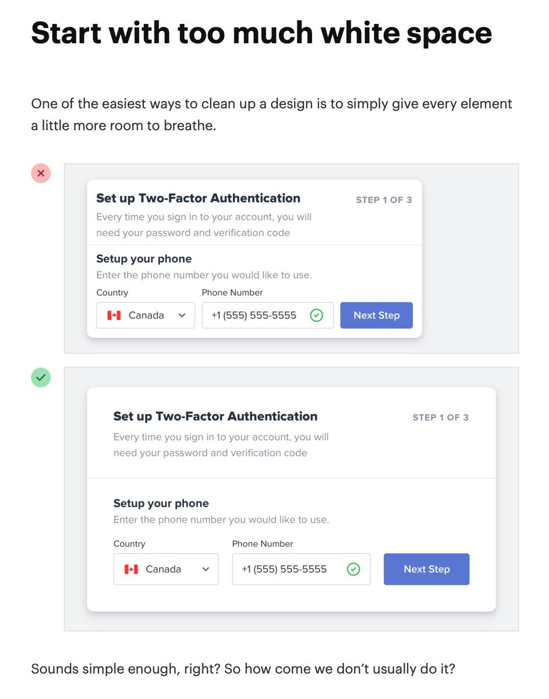
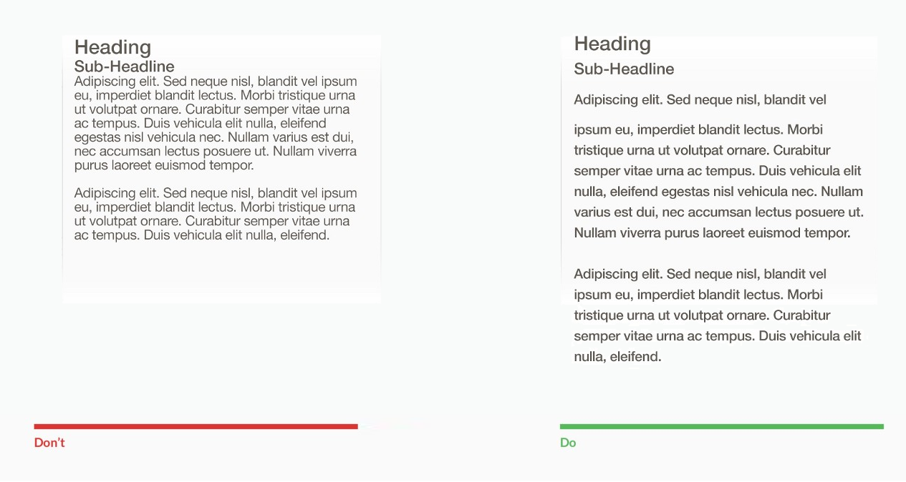

Whether it's in UI design or coding practice, you can never have too much whitespace.
UI design
Shoutout to David Keyes on Twitter.
Putting more whitespace in your UI can prevent unintended clicks as well as direct the user's eye to the correct place.
It can also make your app look less "busy" or "cluttered".
Coding
I think this shows the value of having space between lines and words.
There are, admittedly, more considerations when coding. For example, do I want this whole method to fit on my screen? Can I easily trace scope-defining characters, and more.